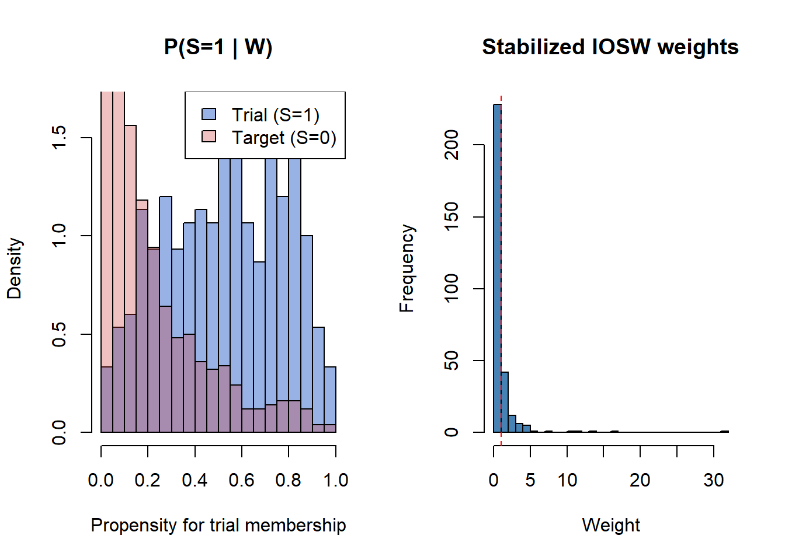

# Pseudocode for transportability TMLE
# Step 1: Combine trial and target population data
combined <- rbind(trial_data, target_data)
combined$S <- c(rep(1, nrow(trial_data)), rep(0, nrow(target_data)))
# Step 2: Estimate P(S=1 | W) - study membership propensity
ps_model <- SuperLearner(Y = combined$S,
X = combined[, covariates],
SL.library = c("SL.glm", "SL.ranger"))
combined$ps_study <- ps_model$SL.predict
# Step 3: Estimate E(Y | A, W) in trial only
outcome_model <- SuperLearner(Y = trial_data$Y,
X = trial_data[, c("A", covariates)],
SL.library = c("SL.glm", "SL.ranger"))
# Step 4: Predict counterfactuals for target population
target_data$Qbar1 <- predict(outcome_model,
newdata = transform(target_data, A = 1))$pred
target_data$Qbar0 <- predict(outcome_model,
newdata = transform(target_data, A = 0))$pred
# Step 5: PATE estimate (before targeting step)
PATE_initial <- mean(target_data$Qbar1 - target_data$Qbar0)
# Step 6: Apply TMLE targeting/fluctuation for efficiency and double robustness
# (Full implementation requires the efficient influence function for the PATE)23 In development
Warning
This chapter is under active development. Content may be incomplete, change substantially, or contain placeholder material.
24 When RWD Meets RCT: Hybrid Designs, Transportability, and Data Fusion
Combining randomized and observational evidence to improve precision and generalizability
Estimated reading time: ~75 minutes
Learning Objectives
After completing this chapter, you will be able to:
- Identify the three core reasons to combine RCT and real-world data: precision, generalizability, and feasibility
- Describe the main hybrid design strategies: external control arms, augmented control arms, and transportability/generalizability
- State the identification assumptions required for hybrid designs, including mean exchangeability across studies, and explain which assumption makes data fusion dangerous
- Distinguish between the sample average treatment effect (SATE), population average treatment effect (PATE), and site-specific effects
- Explain why naive generalization of trial results to external populations fails under effect modification and covariate shift
- State and assess the assumptions required for transportability: S-exchangeability, S-positivity, and consistency
- Implement IOSW and doubly robust transportability estimators, and diagnose covariate shift
- Explain why naive pooling of RCT and observational data is dangerous and characterize the bias it introduces formally
- Apply ES-CV-TMLE and A-TMLE for data-adaptive, bias-protected data fusion
- Compare ES-CV-TMLE and A-TMLE in terms of when each is preferred, and interpret their output
24.1 Why Combine RCT and RWD?
As epidemiologists, we know that no single data source is perfect. RCTs give us internal validity but are often too small, too narrow, or too slow. RWD gives us scale and diversity but lacks randomization. Hybrid designs try to get the best of both worlds. There are three core reasons to combine them.
24.1.1 Precision
Trials may be underpowered for:
- Rare safety endpoints
- Important subgroups
- Long-term secondary endpoints
External RWD can add information and boost precision without enrolling more randomized patients.
24.1.2 Generalizability
RCT participants tend to:
- Be younger and healthier
- Have fewer comorbidities
- Be more adherent and monitored
Thus, trial results may not fully apply to routine-care populations. Think of the typical phase III oncology trial: the enrolled patients are often younger and have better performance status than those you would see in a community oncology clinic.
24.1.3 Feasibility and Ethics
Hybrid designs are useful when:
- Placebo or standard randomized controls are unethical
- Only a single-arm trial is feasible
- Rapid evidence is needed (e.g., post-marketing surveillance, rare diseases)
24.2 Three Design Strategies
24.2.1 External Control Arms
In plain language, an external control arm means: instead of randomizing some patients to a control group within your trial, you borrow the control group from outside the trial, typically from a registry, EHR database, or historical trial data. A single-arm trial (all patients get experimental treatment) may be compared against an external control arm from RWD. Common use cases include oncology (historical controls), rare diseases, and settings where the standard-of-care is well characterized.
Challenges of External Controls
External controls introduce serious methodological risks that every epidemiologist should scrutinize:
- Confounding by indication: Patients in the RWD were not randomized. The reasons they received (or did not receive) a treatment are entangled with their prognosis.
- Differences in data capture: The trial measures outcomes with protocol-specified visits, imaging schedules, and adjudication committees. The RWD may rely on billing codes, free-text notes, or inconsistent follow-up.
- Eligibility misalignment: Trial patients passed strict inclusion/exclusion criteria. RWD patients may differ systematically.
- Calendar time and secular trends: Changes in supportive care, diagnostic coding (e.g., ICD-9 to ICD-10 transitions), or standard-of-care over time can create spurious differences.
For example, a sponsor might augment a small single-arm trial with registry data from patients on standard of care, but if the registry patients are systematically healthier, the comparison is biased.
Always ask: “Would the external controls have been eligible for the trial, and are their outcomes measured comparably?”
24.2.2 Augmented Control Arms
Unlike a fully external control, an augmented control arm retains randomization within the trial. You still have a concurrent randomized control group. The external RWD supplements it rather than replacing it entirely. Think of it as “topping up” your control arm with additional data.
An RCT randomizes patients to experimental treatment vs trial control (e.g., 2:1 randomization), but the trial control arm is augmented with external RWD controls to improve precision, reduce the required randomized control sample size, and support safety and rare-event evaluation.
Borrowing can be:
- Fixed (pre-specified): You decide before unblinding how much external data to incorporate.
- Dynamic / adaptive (data-driven): The degree of borrowing depends on how similar the RWD control outcomes are to the trial control outcomes (e.g., power prior, commensurate prior approaches).
This is generally safer than a pure external control design because the concurrent randomized control arm serves as a built-in validity check. The target remains the treatment effect in the trial-eligible population, estimated with improved precision by borrowing information from the external data.
24.2.3 Transportability and Generalizability
A third strategy — transporting or generalizing trial results to a broader population — is discussed in detail in the next section (Section 24.4). In plain language, “transporting” a trial result means taking the causal effect estimated in the trial’s selected population and asking, “What would this effect be in a different, broader population?” Techniques include inverse odds of sampling weights (IOSW), transport/generalizability TMLE, and doubly robust methods combining outcome and sampling models (Hernán and Robins 2025; Petersen and Laan 2014).
24.3 Identification Assumptions in Hybrid Settings
Hybrid designs require the standard causal identification assumptions (consistency, exchangeability, positivity; see Chapter 5 for a full treatment) plus additional requirements specific to combining data sources.
Assumption: No Unmeasured Confounding (for External / Observational Arms)
The exchangeability assumption (Chapter 5) applies specifically to the RWD component. The RCT component is protected by randomization; the RWD component is not. Residual confounding in the external data may bias the hybrid estimate.
Assumption: Common Support (Overlap)
The positivity assumption (Chapter 5) extends across data sources: the covariate distributions of RCT and RWD patients must overlap. If trial participants are systematically different from RWD patients in ways that matter for the outcome, you cannot borrow information reliably. Check covariate distributions carefully before proceeding.
Assumption: Consistency Across Sources
Beyond the standard consistency assumption, hybrid designs require that outcome definitions, medical coding, and measurement schemes are compatible across sources. For example, “progression-free survival” measured by central radiology review in a trial is not the same as “progression-free survival” inferred from claims data or chart review. If definitions differ, the hybrid estimator conflates incompatible quantities.
For data fusion specifically, the formal identification requirements are:
Mean exchangeability in the trial: \(E(Y_a \mid S = 1, W, A = a) = E(Y_a \mid S = 1, W)\). This holds by randomization.
Positivity of trial enrollment: \(P(S = 1 \mid W) > 0\) for all covariate strata. The RCT must include patients from every subpopulation represented in the RWD. This is the overlap condition between studies.
Positivity of treatment in the trial: \(0 < P(A = 1 \mid S = 1, W) < 1\). This holds by randomization design.
Mean exchangeability across studies (the critical assumption): \(E(Y_a \mid S = 1, W) = E(Y_a \mid W)\). The treatment effect conditional on covariates is the same in the trial and the real-world population. This fails when unmeasured confounders in the RWD affect outcomes differently than in the trial. For example, if trial patients receive more intensive monitoring that independently reduces MACE risk, then the outcome model differs between trial and real-world settings even after conditioning on measured covariates.
Assumption 4 is the one that makes data fusion dangerous. ES-CV-TMLE and A-TMLE (discussed in Section 24.6 and Section 24.7) are designed to be robust when this assumption fails: they either detect the violation and fall back to the RCT-only estimate, or they estimate and correct the resulting bias.
24.4 Transportability and Generalizability
24.4.1 Clarifying the Targets: SATE vs PATE vs Site-Specific Effects
When a randomized trial produces an effect estimate, it is natural to ask: “Does this result apply to my patients?” The answer depends on which causal estimand we are targeting.
Sample Average Treatment Effect (SATE): The average treatment effect among individuals enrolled in the trial: \[\text{SATE} = E[Y^{a=1} - Y^{a=0} \mid S = 1]\] where \(S = 1\) indicates trial membership. This is what the trial directly estimates through randomization.
Population Average Treatment Effect (PATE): The average treatment effect in a target population that may differ from the trial sample: \[\text{PATE} = E[Y^{a=1} - Y^{a=0}]\] This is what clinicians and policymakers usually want — the expected effect if the treatment were deployed broadly.
Site-specific or subgroup effects: Treatment effects within particular subpopulations (e.g., a specific hospital, age group, or region). These are relevant when treatment effects are heterogeneous and local decision-making is needed.
The gap between SATE and PATE can be substantial. Trials often enroll younger, healthier, and more adherent patients than the broader population. If the treatment effect varies with these characteristics (effect modification), the SATE may be a poor guide for population-level decisions.
24.4.2 Why Naive Generalization Fails
Three mechanisms cause SATE and PATE to diverge:
24.4.2.1 Selection Into Trials
Trial participants are not randomly sampled from the target population. Enrollment criteria, willingness to participate, and geographic access all create selection. If the factors driving selection also modify the treatment effect, the trial estimate does not transport.
24.4.2.2 Effect Modification Across Populations
When the treatment effect varies with baseline covariates \(W\) (e.g., age, comorbidity burden, disease severity), and the distribution of \(W\) differs between trial and target populations, the average effect will differ even if the conditional effects \(E[Y^{a=1} - Y^{a=0} \mid W = w]\) are identical.
24.4.2.3 Covariate Shift
Even when the conditional treatment effect (given covariates) is the same across populations, differences in the marginal distribution of covariates produce different marginal effects. This is a reweighting problem, and it is the problem that transportability methods solve.
The Transportability Assumption
The key assumption underlying all transportability methods is that conditional on measured covariates, the treatment effect is the same across populations. This is untestable but becomes more plausible as richer covariate sets are available. It is closely related to the “no unmeasured effect modification” assumption.
24.4.3 Assumptions for Transportability
Formally, transporting a causal effect from a trial (\(S = 1\)) to a target population requires three assumptions:
24.4.3.1 S-Exchangeability (Conditional Independence)
\[Y^a \perp\!\!\!\perp S \mid W \quad \text{for } a \in \{0, 1\}\]
Conditional on measured covariates \(W\), the potential outcomes are independent of study membership. In other words, trial participants and target population members with the same covariate profile have the same expected outcomes under each treatment.
This is the transportability assumption. It is violated when unmeasured factors that differ between populations also modify the treatment effect.
24.4.3.2 S-Positivity
\[P(S = 1 \mid W = w) > 0 \quad \text{for all } w \text{ with } P(W = w) > 0\]
Every covariate profile present in the target population must have some representation in the trial. If the target population includes patient types that were entirely excluded from the trial, transportability is impossible for those patients.
24.4.3.3 Consistency
\[Y = Y^a \text{ when } A = a\]
The standard consistency assumption: the observed outcome under treatment \(a\) equals the potential outcome under \(a\). This requires that the treatment is implemented the same way in the trial and target population (same drug, dose, protocol).
24.4.4 Methods for Transportability
24.4.4.1 IOSW: Inverse Odds of Sampling Weights
The simplest approach reweights the trial data to match the target population’s covariate distribution. The inverse odds of sampling weight for individual \(i\) in the trial is:
\[w_i = \frac{P(S = 0 \mid W_i)}{P(S = 1 \mid W_i)} = \frac{1 - P(S = 1 \mid W_i)}{P(S = 1 \mid W_i)}\]
where \(P(S = 1 \mid W)\) is the propensity for study membership, estimated from a combined dataset of trial participants and target population members.
The PATE is then estimated as:
\[\widehat{\text{PATE}} = \frac{\sum_{i: S_i=1, A_i=1} w_i Y_i}{\sum_{i: S_i=1, A_i=1} w_i} - \frac{\sum_{i: S_i=1, A_i=0} w_i Y_i}{\sum_{i: S_i=1, A_i=0} w_i}\]
IOSW Limitations
IOSW depends entirely on correct specification of the study membership model. If this model is wrong, the transported estimate is biased. Additionally, extreme weights (when the trial population is very different from the target) inflate variance and can produce unstable estimates.
24.4.4.2 Outcome Modeling with Transport
An alternative is to fit an outcome model in the trial data (where randomization ensures unconfounded estimation) and then standardize (g-compute) over the covariate distribution of the target population:
\[\widehat{\text{PATE}} = \frac{1}{n_{\text{target}}} \sum_{i: S_i=0} \left[\hat{E}(Y \mid A=1, W_i) - \hat{E}(Y \mid A=0, W_i)\right]\]
This approach is consistent if the outcome model is correctly specified but does not require correct modeling of study membership.
24.4.4.3 Doubly Robust Approaches: TMLE for Transportability
A TMLE for transportability combines the IOSW and outcome modeling approaches, providing consistency if either the study membership model or the outcome model is correctly specified (see Chapter 8 for the general TMLE framework).
The procedure:
- Estimate the study membership model: \(\hat{P}(S = 1 \mid W)\) using logistic regression or Super Learner
- Estimate the outcome model: \(\hat{E}(Y \mid A, W, S = 1)\) using data from the trial
- Target the PATE: Apply the TMLE fluctuation step using the efficient influence function for the PATE, which incorporates both the outcome model predictions and the IOSW weights
- Compute the transported estimate: Average the targeted predictions over the target population
24.4.5 Diagnostics for Covariate Shift
Before transporting trial results, you must assess how different the trial and target populations are.
24.4.5.1 Propensity for Study Membership
Fit a model for \(P(S = 1 \mid W)\) and examine the distribution:
set.seed(2026)
# Simulate trial and target populations
n_trial <- 300
n_target <- 1000
# Trial enrolls younger, healthier patients
trial_age <- rnorm(n_trial, mean = 55, sd = 8)
trial_comorbidity <- rbinom(n_trial, 1, 0.15)
trial_severity <- rnorm(n_trial, mean = 2, sd = 0.8)
# Target population is older, sicker
target_age <- rnorm(n_target, mean = 65, sd = 12)
target_comorbidity <- rbinom(n_target, 1, 0.40)
target_severity <- rnorm(n_target, mean = 3.5, sd = 1.2)
# Combine
combined <- data.frame(
age = c(trial_age, target_age),
comorbidity = c(trial_comorbidity, target_comorbidity),
severity = c(trial_severity, target_severity),
S = c(rep(1, n_trial), rep(0, n_target))
)
# Fit study membership model
ps_model <- glm(S ~ age + comorbidity + severity,
data = combined, family = binomial)
combined$ps <- predict(ps_model, type = "response")
# Plot
par(mfrow = c(1, 2))
# Propensity score distribution
hist(combined$ps[combined$S == 1], breaks = 30, col = rgb(0.2, 0.4, 0.8, 0.5),
main = "P(S=1 | W)", xlab = "Propensity for trial membership",
xlim = c(0, 1), freq = FALSE)
hist(combined$ps[combined$S == 0], breaks = 30, col = rgb(0.8, 0.2, 0.2, 0.3),
add = TRUE, freq = FALSE)
legend("topright", c("Trial (S=1)", "Target (S=0)"),
fill = c(rgb(0.2, 0.4, 0.8, 0.5), rgb(0.8, 0.2, 0.2, 0.3)))
# IOSW weights
trial_idx <- combined$S == 1
iosw <- (1 - combined$ps[trial_idx]) / combined$ps[trial_idx]
iosw_stabilized <- iosw / mean(iosw)
hist(iosw_stabilized, breaks = 30, col = "steelblue",
main = "Stabilized IOSW weights", xlab = "Weight")
abline(v = 1, lty = 2, col = "red")
par(mfrow = c(1, 1))
cat(sprintf("Effective sample size: %.0f / %d (%.0f%%)\n",
sum(iosw_stabilized)^2 / sum(iosw_stabilized^2),
n_trial,
100 * (sum(iosw_stabilized)^2 / sum(iosw_stabilized^2)) / n_trial))Effective sample size: 41 / 300 (14%)
24.4.5.2 Standardized Mean Differences
Compare covariate distributions before and after reweighting:
# Compute standardized mean differences
compute_smd <- function(x_trial, x_target, weights = NULL) {
if (is.null(weights)) {
mean_diff <- mean(x_trial) - mean(x_target)
} else {
mean_diff <- weighted.mean(x_trial, weights) - mean(x_target)
}
pooled_sd <- sqrt((var(x_trial) + var(x_target)) / 2)
return(mean_diff / pooled_sd)
}
covars <- c("age", "comorbidity", "severity")
smd_before <- sapply(covars, function(v)
compute_smd(combined[[v]][trial_idx], combined[[v]][!trial_idx]))
smd_after <- sapply(covars, function(v)
compute_smd(combined[[v]][trial_idx], combined[[v]][!trial_idx],
weights = iosw_stabilized))
smd_df <- data.frame(
covariate = rep(covars, 2),
smd = c(smd_before, smd_after),
status = rep(c("Before IOSW", "After IOSW"), each = length(covars))
)
# Dot plot
plot(1:length(covars), abs(smd_before), pch = 19, col = "red", cex = 1.5,
xlim = c(0.5, length(covars) + 0.5), ylim = c(0, max(abs(smd_before)) * 1.1),
xlab = "", ylab = "Absolute SMD", main = "Covariate Balance: Trial vs Target",
xaxt = "n")
points(1:length(covars), abs(smd_after), pch = 17, col = "blue", cex = 1.5)
axis(1, at = 1:length(covars), labels = covars)
abline(h = 0.1, lty = 2, col = "gray50")
text(length(covars), 0.12, "SMD = 0.1 threshold", col = "gray50", cex = 0.8, adj = 1)
legend("topright", c("Before IOSW", "After IOSW"),
pch = c(19, 17), col = c("red", "blue"))24.4.6 Worked Example: SATE vs PATE Divergence
We demonstrate how effect modification produces divergence between the trial-specific effect and the population effect.
set.seed(2026)
# --- Data generation with effect modification ---
n_trial <- 300
n_target <- 1000
# Trial population (younger)
W_trial <- rnorm(n_trial, mean = 55, sd = 8)
A_trial <- rbinom(n_trial, 1, 0.5) # randomized
# Target population (older)
W_target <- rnorm(n_target, mean = 65, sd = 12)
# Treatment effect INCREASES with age (effect modification)
# Y = 10 + 0.1*age + A * (0.5 + 0.05 * (age - 50)) + noise
# At age 55: effect = 0.5 + 0.05*5 = 0.75
# At age 65: effect = 0.5 + 0.05*15 = 1.25
tau <- function(age) 0.5 + 0.05 * (age - 50)
Y_trial <- 10 + 0.1 * W_trial + A_trial * tau(W_trial) + rnorm(n_trial, 0, 1)
# SATE: treatment effect estimated in trial
sate_est <- mean(Y_trial[A_trial == 1]) - mean(Y_trial[A_trial == 0])
# True SATE (analytical)
true_sate <- mean(tau(W_trial))
# True PATE (analytical)
true_pate <- mean(tau(W_target))
# IOSW-transported estimate
combined_w <- c(W_trial, W_target)
combined_s <- c(rep(1, n_trial), rep(0, n_target))
ps_fit <- glm(combined_s ~ combined_w, family = binomial)
ps_hat <- predict(ps_fit, type = "response")
ps_trial <- ps_hat[1:n_trial]
iosw <- (1 - ps_trial) / ps_trial
iosw_stab <- iosw / mean(iosw)
pate_iosw <- weighted.mean(Y_trial[A_trial == 1], iosw_stab[A_trial == 1]) -
weighted.mean(Y_trial[A_trial == 0], iosw_stab[A_trial == 0])
cat("=== SATE vs PATE with Effect Modification ===\n")=== SATE vs PATE with Effect Modification ===cat(sprintf("True SATE (trial population): %.3f\n", true_sate))True SATE (trial population): 0.767cat(sprintf("Estimated SATE (naive): %.3f\n", sate_est))Estimated SATE (naive): 0.983cat(sprintf("True PATE (target population): %.3f\n", true_pate))True PATE (target population): 1.245cat(sprintf("Estimated PATE (IOSW): %.3f\n", pate_iosw))Estimated PATE (IOSW): 1.097cat(sprintf("\nDivergence (PATE - SATE): %.3f\n", true_pate - true_sate))
Divergence (PATE - SATE): 0.478cat("\nThe target population is older, and the treatment effect\n")
The target population is older, and the treatment effectcat("increases with age, so PATE > SATE.\n")increases with age, so PATE > SATE.In this example, the treatment effect increases with age. Because the target population is older than the trial population, the PATE exceeds the SATE. A clinician treating the target population who relied on the trial’s SATE would underestimate the treatment benefit. The IOSW-transported estimate corrects for this by upweighting older trial participants.
24.4.7 Connection to ES-CV-TMLE and A-TMLE
The transportability framework connects to the adaptive methods described in Section 24.6 and Section 24.7. Specifically:
- ES-CV-TMLE (Lauren Eyler Dang et al. 2022) uses cross-validation to select the optimal combination of trial and external data for estimating the PATE, automatically downweighting external data that introduces bias.
- A-TMLE (M. J. van der Laan et al. 2025) adapts to the degree of similarity between trial and external populations, achieving efficiency gains when populations are similar while protecting against bias when they are not.
Both methods can be viewed as adaptive transportability estimators: they solve the transportability problem while being robust to violations of the transportability assumption.
24.5 The Danger of Naive Pooling
24.5.1 A Motivating Scenario
Suppose you have a small RCT of 400 patients comparing a new diabetes drug to standard of care, with a composite cardiovascular event (MACE) as the primary endpoint. The RCT alone yields a risk difference of \(-0.7\%\) with a wide 95% CI of \([-2.0\%, 0.5\%]\), not statistically significant.
You also have access to a large claims database (e.g., Optum) with 14,000 patients on the same two treatments. Naive pooling (simply combining the datasets and running TMLE on the merged data) might yield a tighter CI. But the claims data has unmeasured confounders: patients who received the new drug may have been healthier, more adherent, or under closer monitoring. If these unmeasured factors differ between treatment groups, the observational treatment effect is biased.
The naive pooled estimate might be \(-2.5\%\) with a tight CI of \([-3.5\%, -1.5\%]\), statistically significant, but wrong. The narrow CI gives false confidence in a biased estimate.
24.5.2 Formalizing the Bias
Let \(S\) denote the study indicator (\(S = 1\) for RCT, \(S = 0\) for RWD), \(A\) the treatment, \(Y\) the outcome, and \(W\) baseline covariates. The pooled-ATE estimand is:
\[ \tilde{\Psi}(P_0) = E\big[E(Y \mid W, A = 1) - E(Y \mid W, A = 0)\big] \]
This pools the outcome regression across both studies. When the conditional mean outcome differs between studies (\(E(Y_a \mid S = 1, W) \neq E(Y_a \mid W)\)), the pooled-ATE is biased for the true treatment effect.
The RCT-ATE estimand uses only the trial’s outcome model but marginalizes over the broader covariate distribution:
\[ \Psi(P_0) = E_W\big[E(Y \mid S = 1, W, A = 1) - E(Y \mid S = 1, W, A = 0)\big] \]
The bias is the difference:
\[ \Psi^{\#}(P_0) = \tilde{\Psi}(P_0) - \Psi(P_0) \]
Both ES-CV-TMLE and A-TMLE target the RCT-ATE \(\Psi(P_0)\), either by detecting when \(\Psi^{\#}\) is large enough to reject the external data (ES-CV-TMLE) or by directly estimating and subtracting \(\Psi^{\#}\) (A-TMLE).
24.5.3 Bias-Variance Tradeoff
The fundamental insight behind both methods is that combining RCT and RWD involves a tradeoff:
- Variance reduction: Adding more data reduces the variance of the treatment effect estimate. The RWD contributes information about the outcome regression \(E(Y \mid W, A)\), which helps predict outcomes more precisely.
- Bias introduction: If the RWD outcome model differs from the RCT’s, pooling introduces bias proportional to \(\Psi^{\#}\).
The optimal strategy depends on whether the bias is small enough relative to the variance reduction. If \(|\Psi^{\#}|^2 < \text{variance reduction from pooling}\), pooling helps. Otherwise, it hurts. ES-CV-TMLE and A-TMLE handle this tradeoff differently, as summarized in Section 24.8.
24.6 ES-CV-TMLE: Experiment-Selector Cross-Validated TMLE
24.6.1 The Core Insight
Here is the key idea in plain language: external data help you train better prediction models, but the RCT is the judge. Think of it like studying for an exam with extra textbooks (the RWD), but the exam itself (cross-validation) is graded only on RCT data. If the external textbooks helped you learn real patterns, your exam score improves. If they taught you spurious associations driven by confounding, the exam catches that and those models get down-weighted.
ES-CV-TMLE (Lauren Eyler Dang et al. 2022) uses V-fold cross-validation to decide whether pooling helps or hurts. We may have poor precision in the RCT alone for nuisance functions \(Q\) and \(g\). External data can improve the learning of these functions, but confounding in the RWD could distort outcome relationships and treatment assignment mechanisms. ES-CV-TMLE protects against this by:
- Proposing multiple candidate nuisance models, some learned on RCT only, some on RWD only, some on combined data.
- Using cross-validation on the RCT to evaluate each model’s performance (e.g., via log-likelihood loss).
- Choosing the best-performing nuisance model (or an ensemble of them) for TMLE.
External data are “supervisors” but do not override the RCT. Even if the RWD is confounded, this procedure can only help (or do no harm) relative to using the RCT alone.
24.6.2 Algorithm Step by Step
- Split the combined (RCT + RWD) dataset into V cross-validation folds.
- In each training fold, fit outcome regressions, treatment mechanisms, and study enrollment models. Compute the ATE under two “experiments”: (a) RCT data only, (b) RCT + RWD pooled.
- Evaluate a selection criterion for each experiment: estimated bias\(^2\) + variance. The bias is estimated from the discrepancy between the RCT-only and pooled outcome models. Optionally, a negative control outcome (NCO) can sharpen the bias estimate.
- Select the experiment that minimizes the criterion in each fold.
- In the validation fold, estimate the ATE using TMLE for the selected experiment.
- Average across validation folds to produce the final estimate and confidence interval.
The cross-validation is critical: it prevents the selection from overfitting to the training data. The proportion of folds that select pooling provides a useful diagnostic: if most folds select RCT-only, the external data are likely biased.
24.6.3 Application: WASH Benefits Example
The EScvtmle package includes data from the WASH Benefits Bangladesh trial, which studied the effect of sanitation interventions on child growth (length-for-age Z-scores). The dataset includes:
- Study 1 (\(S = 1\)): A random sample of 300 observations from the RCT (150 sanitation, 150 control)
- Study 2 (\(S = 0\), unbiased): Another random sample of 300 from the remaining RCT data, used as an unbiased external dataset
- Study 3 (\(S = 0\), biased): An observational sample where “treatment” is having an improved latrine at baseline, likely confounded by socioeconomic status
This setup lets us test ES-CV-TMLE under both unbiased and biased external data.
Show code
# Install ES-CV-TMLE
remotes::install_github("Lauren-EylerDang/EScvtmle")24.6.3.1 Unbiased External Data
Show code
library(EScvtmle)
data(wash)
# Use studies 1 (RCT) and 2 (unbiased external)
dat_unbiased <- wash[wash$study %in% c(1, 2), ]
dat_unbiased$study[dat_unbiased$study == 2] <- 0
set.seed(2026)
results_unbiased <- ES.cvtmle(
txinrwd = TRUE,
data = dat_unbiased,
study = "study",
covariates = c("aged", "sex", "momedu", "hfiacat"),
treatment_var = "intervention",
treatment = 1,
outcome = "laz",
NCO = "Nlt18scale",
pRCT = 0.5,
V = 10,
Q.SL.library = c("SL.glm", "SL.mean"),
g.SL.library = c("SL.glm"),
Q.discreteSL = TRUE,
g.discreteSL = TRUE,
family = "gaussian",
family_nco = "gaussian",
fluctuation = "logistic",
comparisons = list(c(1), c(1, 0)),
adjustnco = FALSE,
target.gwt = TRUE
)
# Results
print(results_unbiased)Key arguments:
txinrwd = TRUE: The active treatment is available in the external data.comparisons = list(c(1), c(1, 0)): Compare two experiments: RCT only (\(S = 1\)) vs. RCT + RWD (\(S \in \{1, 0\}\)).NCO = "Nlt18scale": Negative control outcome (household members \(\leq 18\)), which should not be affected by sanitation intervention.V = 10: 10-fold cross-validation.
With unbiased external data, we expect most folds to select pooling, producing a narrower CI than RCT-only.
24.6.3.2 Biased External Data
Show code
# Use studies 1 (RCT) and 3 (biased external)
dat_biased <- wash[wash$study %in% c(1, 3), ]
dat_biased$study[dat_biased$study == 3] <- 0
set.seed(2026)
results_biased <- ES.cvtmle(
txinrwd = TRUE,
data = dat_biased,
study = "study",
covariates = c("aged", "sex", "momedu", "hfiacat"),
treatment_var = "intervention",
treatment = 1,
outcome = "laz",
NCO = "Nlt18scale",
pRCT = 0.5,
V = 10,
Q.SL.library = c("SL.glm", "SL.mean"),
g.SL.library = c("SL.glm"),
Q.discreteSL = TRUE,
g.discreteSL = TRUE,
family = "gaussian",
family_nco = "gaussian",
fluctuation = "logistic",
comparisons = list(c(1), c(1, 0)),
adjustnco = TRUE,
target.gwt = TRUE
)
print(results_biased)With biased external data, we expect most folds to select RCT-only. The adjustnco = TRUE flag incorporates the negative control outcome into the bias estimate, which can improve the method’s ability to detect bias.
24.6.4 Interpreting ES-CV-TMLE Output
The output includes:
ATE: Point estimates under the bias\(^2\)+variance selector (b2v) and the NCO-adjusted selector (ncobias).CI: 95% confidence intervals.proportionselected: The fraction of cross-validation folds that selected each experiment. A high proportion selecting RCT-only signals that the external data are likely biased.g: Propensity score values; check for near-zero values indicating positivity violations.
24.7 A-TMLE: Adaptive TMLE
24.7.1 The Core Insight
Think of A-TMLE as a “meta-analysis machine” that does not just combine study results, but adaptively learns the best way to blend multiple estimators from different data sources. Where ES-CV-TMLE selects among candidate prediction models (a step inside the estimator), A-TMLE operates one level up: it selects among or blends entire estimators, each of which may use different data sources or modeling strategies. The cross-validated selection criterion guides how much to trust each source.
Adaptive TMLE (A-TMLE) (M. van der Laan et al. 2025) takes a different approach from ES-CV-TMLE: instead of deciding whether to pool, it always pools but adaptively estimates and corrects the bias. The key innovation is that efficiency gains depend on the complexity of the bias, not just its magnitude.
Instead of combining candidate nuisance models, A-TMLE combines candidate estimators (e.g., separate hybrid analyses):
- TMLE using RCT only
- TMLE using RWD only (carefully adjusted)
- TMLE using both RCT + RWD in a joint model
- Other candidate estimators
It then uses a SuperLearner-style convex combination of these estimators to minimize cross-validated risk, yielding an adaptive, doubly robust final estimate.
Let \(\hat\Psi_1, \dots, \hat\Psi_K\) be candidate estimators of the same target parameter \(\Psi\). A-TMLE constructs:
\[ \hat\Psi_{\text{A-TMLE}} = \sum_{k=1}^K \alpha_k \hat\Psi_k \]
with \(\alpha_k \ge 0\) and \(\sum_k \alpha_k = 1\). Weights \(\alpha\) are chosen to minimize cross-validated loss (e.g., squared error of influence curves), and may be constrained (e.g., RCT estimator always included) or hierarchically specified (e.g., more weight on RCT when conflict arises).
24.7.2 Algorithm Step by Step
- Estimate the pooled-ATE \(\tilde{\Psi}\) using standard TMLE on the combined RCT + RWD data.
- Estimate the bias \(\Psi^{\#}\) using a flexible working model. A-TMLE uses the highly adaptive lasso (HAL) to learn the bias structure data-adaptively, without pre-specifying its functional form.
- Correct: The final estimate is \(\hat{\Psi} = \hat{\tilde{\Psi}} - \hat{\Psi}^{\#}\).
The targeting step ensures the final estimator solves the efficient influence function equation, providing valid inference under appropriate regularity conditions regardless of whether the bias working model is correctly specified.
Why HAL? The highly adaptive lasso can approximate any cadlag function, so it can capture complex bias patterns (interactions, nonlinearities) without the analyst having to specify them. If the bias is zero, HAL shrinks \(\hat{\Psi}^{\#}\) toward zero, and the estimator achieves the efficiency of pooling. If the bias is large, \(\hat{\Psi}^{\#}\) captures it, and the estimator falls back toward the RCT-only estimate. See Chapter 10 for more on HAL and its role in targeted learning.
24.7.3 Application: Simulated RCT + RWD
The atmle package includes a sample dataset for demonstration:
Show code
# Install A-TMLE (requires sl3 from tlverse)
remotes::install_github("tlverse/sl3")
remotes::install_github("tq21/atmle")Show code
library(atmle)
library(sl3)
# Load built-in sample data
data(sample_data)
# Define Super Learner library
sl_lib <- list(
Lrnr_glm$new(),
Lrnr_xgboost$new()
)
# Standard (non-adaptive) TMLE for comparison
set.seed(2026)
tmle_res <- nonparametric(
data = mydata,
S = "S",
W = c("W1", "W2", "W3", "W4"),
A = "A",
Y = "Y",
family = "gaussian",
Pi_method = sl_lib,
g_method = "glm",
Q_method = sl_lib,
Q_pooling = TRUE,
v_folds = 5
)
# A-TMLE with HAL-based bias correction
set.seed(2026)
atmle_res <- atmle(
data = mydata,
S = "S",
W = c("W1", "W2", "W3", "W4"),
A = "A",
Y = "Y",
family = "gaussian",
theta_method = sl_lib,
Pi_method = sl_lib,
g_method = sl_lib,
theta_tilde_method = sl_lib,
bias_working_model = "HAL",
pooled_working_model = "HAL",
enumerate_basis_args = list(
max_degree = 3,
smoothness_orders = 1
),
v_folds = 5
)Key arguments:
S = "S": Study indicator (1 = RCT, 0 = RWD).theta_method,Pi_method,g_method,theta_tilde_method: Super Learner libraries for the outcome regression, study enrollment score, treatment mechanism, and marginal outcome, respectively.bias_working_model = "HAL": Use the highly adaptive lasso to learn the bias structure.enumerate_basis_args: Control the complexity of the HAL basis functions (highermax_degreeallows more complex bias patterns).
24.7.4 Comparing Results
Show code
# Compare standard TMLE vs A-TMLE
cat("Standard TMLE (pooled, no bias correction):\n")
cat(" Estimate:", round(tmle_res$psi_pooled_W, 4), "\n")
cat(" 95% CI: [", round(tmle_res$lower_pooled_W, 4), ",",
round(tmle_res$upper_pooled_W, 4), "]\n\n")
cat("A-TMLE (bias-corrected):\n")
cat(" Pooled-ATE estimate:", round(atmle_res$psi_tilde_est, 4), "\n")
cat(" Estimated bias:", round(atmle_res$psi_pound_est, 4), "\n")
cat(" Corrected estimate:", round(atmle_res$est, 4), "\n")
cat(" 95% CI: [", round(atmle_res$lower, 4), ",",
round(atmle_res$upper, 4), "]\n")24.7.5 Interpreting A-TMLE Output
est: The bias-corrected ATE estimate \(\hat{\Psi} = \hat{\tilde{\Psi}} - \hat{\Psi}^{\#}\).psi_tilde_est: The pooled-ATE before bias correction.psi_pound_est: The estimated bias. If this is near zero, pooling was safe. If it is large, A-TMLE corrected for substantial external data bias.lower,upper: 95% confidence interval based on the efficient influence curve.eic: The efficient influence curve values, useful for diagnostics.
24.8 When to Use Which Method
Both methods are valid approaches to data fusion. The choice depends on the setting:
| Feature | ES-CV-TMLE | A-TMLE |
|---|---|---|
| Strategy | Select: pool or not? | Correct: estimate and subtract bias |
| Selection criterion | Cross-validated bias\(^2\) + variance | Adaptive working model via HAL |
| When external data have small, simple bias | Pools (gains efficiency) | Corrects bias (gains efficiency) |
| When external data have large bias | Rejects external data | Subtracts bias (falls back to RCT-like width) |
| When external data have small but complex bias | May not detect it | Still gains efficiency (key advantage) |
| Negative control outcomes | Supported (improves bias detection) | Not currently implemented |
Prefer ES-CV-TMLE when:
- You have a negative control outcome available. ES-CV-TMLE can use NCOs to improve bias detection, which is especially valuable when the bias is subtle.
- The decision is binary: either the external data are trustworthy or they are not. ES-CV-TMLE makes this choice explicitly.
- You want a transparent decision that is easy to communicate to regulators: “the algorithm selected RCT-only in 8 of 10 folds, indicating the external data are biased.”
Prefer A-TMLE when:
- The bias may be small but complex (e.g., it varies across covariate strata). A-TMLE can still gain efficiency even with complex bias patterns, because it learns the bias function rather than testing a global null.
- You want to always use the external data to improve precision, rather than making a binary pool/reject decision.
- The RCT is very small and you need every bit of efficiency gain. A-TMLE’s continuous bias correction can extract more precision than ES-CV-TMLE’s binary selection.
In practice, running both methods and comparing their results provides a useful robustness check. If they agree, you can be more confident in the conclusions. If they disagree substantially, the bias structure deserves closer investigation.
A note on what the RCT-only estimate tells you
The RCT-only estimate is consistent for the trial-sample treatment effect under randomization: it answers the question “what is the average effect among the patients who were enrolled in the trial?” This is internally valid but not necessarily generalizable to a broader target population if the trial enrolled a selected subset of patients.
Data fusion can improve precision for the trial-sample estimand (by augmenting outcome prediction) or enable estimation of a target-population estimand (by reweighting to a broader population). Both estimands are legitimate, but they answer different questions.
Always report the RCT-only estimate as a benchmark alongside any data-fusion result, and be explicit about which population the estimand refers to.
24.9 Applied Example: A Simplified Hybrid Analysis in R
The conceptual workflow above described ES-CV-TMLE and A-TMLE at a high level. This example builds a concrete, simplified hybrid analysis from scratch. We simulate an RCT and an RWD cohort, compare their covariate distributions, and estimate the ATE three ways: RCT only, RWD only (adjusted), and pooled with a source indicator.
24.9.1 Simulate an RCT and RWD Cohort
Show code
library(tidyverse)
set.seed(2025)
# RCT: 300 patients, randomized 1:1
n_rct <- 300
rct <- tibble(
source = "RCT",
age = rnorm(n_rct, 55, 8),
risk_score = rnorm(n_rct, 0, 1),
A = rbinom(n_rct, 1, 0.5), # randomized
Y = rbinom(n_rct, 1, plogis(-2 + 0.4 * A + 0.05 * age + 0.3 * risk_score))
)
# RWD: 2000 patients, treatment is confounded
n_rwd <- 2000
rwd <- tibble(
source = "RWD",
age = rnorm(n_rwd, 60, 10), # older population
risk_score = rnorm(n_rwd, 0.3, 1.2), # sicker
A = rbinom(n_rwd, 1, plogis(-0.5 + 0.03 * age + 0.4 * risk_score)),
Y = rbinom(n_rwd, 1, plogis(-2 + 0.4 * A + 0.05 * age + 0.3 * risk_score))
)
combined <- bind_rows(rct, rwd)The RCT is small (n = 300) with randomized treatment. The RWD is larger (n = 2000) but has confounded treatment assignment: older and sicker patients are more likely to be treated.
24.9.2 Compare Source Distributions
Before borrowing information across sources, check whether the covariate distributions overlap. Large discrepancies signal the need for transportability adjustments or caution about pooling.
Show code
combined %>%
pivot_longer(cols = c(age, risk_score), names_to = "variable") %>%
ggplot(aes(x = value, fill = source)) +
geom_density(alpha = 0.4) +
facet_wrap(~variable, scales = "free") +
labs(title = "Covariate distributions: RCT vs. RWD") +
theme_minimal()
24.9.3 Three Analyses: RCT Only, RWD Only, Pooled
Show code
# 1. RCT-only analysis (simple difference in means)
rct_ate <- mean(rct$Y[rct$A == 1]) - mean(rct$Y[rct$A == 0])
# 2. RWD-only adjusted analysis (g-computation)
rwd_mod <- glm(Y ~ A + age + risk_score, family = binomial, data = rwd)
rwd_p1 <- predict(rwd_mod, newdata = mutate(rwd, A = 1), type = "response")
rwd_p0 <- predict(rwd_mod, newdata = mutate(rwd, A = 0), type = "response")
rwd_ate <- mean(rwd_p1 - rwd_p0)
# 3. Pooled analysis with source indicator
pool_mod <- glm(Y ~ A + age + risk_score + source, family = binomial, data = combined)
pool_p1 <- predict(pool_mod, newdata = mutate(combined, A = 1), type = "response")
pool_p0 <- predict(pool_mod, newdata = mutate(combined, A = 0), type = "response")
pool_ate <- mean(pool_p1 - pool_p0)
tibble(
Analysis = c("RCT only", "RWD only (adjusted)", "Pooled (source-adjusted)"),
ATE = round(c(rct_ate, rwd_ate, pool_ate), 4)
)# A tibble: 3 × 2
Analysis ATE
<chr> <dbl>
1 RCT only 0.105
2 RWD only (adjusted) 0.062
3 Pooled (source-adjusted) 0.0718The RCT-only estimate is unbiased but imprecise (small sample). The RWD-only estimate has more precision but relies on correct confounding adjustment. The pooled estimate borrows strength from both sources while adjusting for systematic differences via the source indicator.
24.9.4 Covariate Overlap Diagnostic
A source membership model quantifies how distinguishable the RCT and RWD populations are. If predicted probabilities of being in the RCT are concentrated near 0 or 1, the two populations occupy different regions of covariate space and pooling is risky.
Show code
# Check overlap between RCT and RWD using source membership model
source_mod <- glm(as.numeric(source == "RCT") ~ age + risk_score,
family = binomial, data = combined)
combined$p_rct <- predict(source_mod, type = "response")
ggplot(combined, aes(x = p_rct, fill = source)) +
geom_density(alpha = 0.4) +
labs(x = "Predicted probability of being in RCT",
title = "Source overlap diagnostic") +
theme_minimal()
24.9.5 Pooled TMLE
For a more principled analysis, TMLE with Super Learner can be applied to the pooled data, using the source indicator as a covariate. This provides doubly robust estimation and valid influence-curve inference.
Show code
library(tmle)
tmle_pool <- tmle(
Y = combined$Y,
A = combined$A,
W = as.data.frame(combined %>% select(age, risk_score, source) %>%
mutate(source = as.numeric(source == "RCT"))),
Q.SL.library = c("SL.glm", "SL.ranger", "SL.mean"),
g.SL.library = c("SL.glm", "SL.mean")
)
cat("Pooled TMLE ATE:", round(tmle_pool$estimates$ATE$psi, 4), "\n")Pooled TMLE ATE: 0.064 Show code
cat("95% CI:", round(tmle_pool$estimates$ATE$CI, 4), "\n")95% CI: 0.0242 0.1039 This example demonstrates a external control arm analysis skeleton. The following code provides an alternative skeleton where a randomized trial treatment arm is explicitly combined with an RWD external control arm:
Show code
set.seed(1)
## ── Simulate RCT treatment arm ──
n_rct <- 150
W1_rct <- rnorm(n_rct, mean = 0.2)
W2_rct <- rbinom(n_rct, 1, 0.4)
A_rct <- rep(1, n_rct) # all treated
Y_rct <- rbinom(n_rct, 1, plogis(-1 + 0.6 * 1 + 0.5 * W1_rct + 0.3 * W2_rct))
## ── Simulate RWD external controls ──
n_rwd <- 400
W1_rwd <- rnorm(n_rwd, mean = -0.1) # slight covariate shift
W2_rwd <- rbinom(n_rwd, 1, 0.5)
A_rwd <- rep(0, n_rwd) # all control
Y_rwd <- rbinom(n_rwd, 1, plogis(-1 + 0.6 * 0 + 0.5 * W1_rwd + 0.3 * W2_rwd))
## ── Combined analysis dataset ──
dat <- data.frame(
W1 = c(W1_rct, W1_rwd),
W2 = c(W2_rct, W2_rwd),
S = c(rep(1, n_rct), rep(0, n_rwd)), # study membership
A = c(A_rct, A_rwd),
Y = c(Y_rct, Y_rwd)
)
if (requireNamespace("tmle", quietly = TRUE)) {
library(tmle)
## Include study indicator S as a covariate to adjust for
## population differences between RCT and RWD
W <- dat[, c("W1", "W2", "S")]
fit <- tmle(
Y = dat$Y, A = dat$A, W = W,
family = "binomial",
Q.SL.library = c("SL.glm", "SL.mean"),
g.SL.library = c("SL.glm", "SL.mean")
)
cat("── Hybrid RCT + RWD external control analysis ──\n")
cat("ATE (risk difference):", round(fit$estimates$ATE$psi, 4), "\n")
cat("95% CI:", round(fit$estimates$ATE$CI, 4), "\n")
cat("\nNote: For more sophisticated approaches, see:\n")
cat(" - EScvtmle: external-source cross-validated TMLE\n")
cat(" - A-TMLE: adaptive TMLE for data-adaptive borrowing\n")
} else {
message("Install the 'tmle' package: install.packages('tmle')")
}24.10 Practical Diagnostics and Considerations
24.10.1 Harmonization
Before attempting hybrid estimation, you must ensure that the two data sources are speaking the same language. This is often the most labor-intensive step. Align endpoint definitions and censoring rules, harmonize covariates (coding, units, ranges), and confirm consistent definition of “treatment” across sources.
24.10.2 Assess Similarity Between RCT and RWD
Check covariate distributions before you borrow. Visualization is your first line of defense:
bind_rows(
W_rct %>% mutate(source = "RCT"),
W_rwd %>% mutate(source = "RWD")
) %>%
pivot_longer(cols = -source) %>%
ggplot(aes(x = value, fill = source)) +
geom_density(alpha = 0.4) +
facet_wrap(~ name, scales = "free")Large discrepancies may require transportability modeling, and non-overlapping regions signal positivity issues.
24.10.3 Pre-Processing: Matching for Overlap
Before applying ES-CV-TMLE or A-TMLE, ensure that the RCT and RWD populations have adequate covariate overlap. A recommended strategy:
- Apply RCT inclusion/exclusion criteria to the RWD to ensure basic comparability.
- Estimate the trial enrollment score \(\hat{\Pi}(1 \mid W) = \hat{P}(S = 1 \mid W)\) using the combined data.
- Match each RCT patient with \(K\) external patients on the enrollment score (e.g., \(K = 3\) nearest-neighbor matching).
- Within the matched sample, estimate the RWD propensity score and optionally apply additional matching.
This two-stage matching makes the trial enrollment score and the RWD propensity score approximately constant across the analysis sample, which improves the finite-sample robustness of both ES-CV-TMLE and A-TMLE.
24.10.4 Diagnostics Checklist
After fitting any hybrid method, check:
- Propensity score overlap: Plot \(\hat{P}(S = 1 \mid W)\); if the RCT and RWD populations have minimal overlap, the external data cannot help and may introduce instability.
- Estimated bias magnitude: A-TMLE reports \(\hat{\Psi}^{\#}\) directly. For ES-CV-TMLE, the proportion of folds selecting RCT-only is a proxy for bias severity.
- Influence function values: Extreme values suggest near-positivity violations or highly influential observations.
Sensitivity Analyses Are Not Optional
Every hybrid analysis should include sensitivity checks that quantify how much the result depends on the external data:
- Re-estimate using RCT-only TMLE (your “no-borrowing” benchmark)
- Vary the degree of borrowing (e.g., by up-weighting/down-weighting RWD in hybrid estimators)
- Use E-values or quantitative bias analysis (QBA) to examine the impact of unmeasured confounding in the RWD component
- Apply negative control analyses in the RWD part
- Report results under different Super Learner libraries to assess model dependence
- Report the proportion of external data retained after matching, and how results change with stricter or looser matching thresholds
If your conclusions change dramatically depending on how much RWD you include, that is a signal that the external data may be introducing bias rather than reducing variance.
24.11 When to Use Hybrid Designs (and When Not To)
Hybrid designs are appropriate when:
- RWD is of reasonable quality
- Key confounders in RWD are measured
- Outcome definitions are compatible
- There is substantial overlap in covariate distributions
- The trial alone is underpowered or narrow in scope
When Hybrid Designs Are Inappropriate
They may be inappropriate when:
- RWD is subject to severe unmeasured confounding: If the observational data lack key confounders (e.g., disease severity, performance status), borrowing from RWD can introduce more bias than it resolves.
- Data sources are poorly harmonized: If outcome definitions, covariate coding, or follow-up schedules differ substantially and cannot be reconciled, the hybrid estimator is comparing incompatible quantities.
- There is little overlap in covariate or treatment patterns: If the trial population and RWD population occupy different regions of the covariate space, extrapolation replaces estimation.
- The trial is already well-powered for the primary endpoint: In this case, the marginal precision gain from RWD may not justify the additional assumptions and complexity.
In those cases, a pure RCT analysis with careful interpretation may be preferable. Adding RWD is not always better; it is better only when the assumptions hold and the data quality warrants it.
24.12 Regulatory Expectations
Reviewer Expectations for Hybrid RCT-RWD Studies
Regulatory reviewers and journal referees evaluating external control or data-augmentation analyses focus on several concerns:
- Comparability: Are the RCT and RWD populations comparable on measured confounders? Are inclusion/exclusion criteria aligned? Show standardized differences and overlap diagnostics.
- Audit trails: Can the analysis be reproduced from the archived code, data snapshot, and SAP? Are variable definitions, cohort selection rules, and model specifications documented before data access?
- Cohort alignment: Are index dates, follow-up windows, and outcome definitions harmonized between data sources? Time zero misalignment is a common source of immortal time bias (Hernán and Robins 2016).
- Sensitivity analyses: Results should be reported under multiple analysis choices (with/without external data, varying matching thresholds, different learner libraries) to demonstrate robustness.
- Transparency about the RCT-only estimate: The RCT-only estimate is consistent for the trial-sample treatment effect (under randomization). Augmentation with RWD may improve precision for this estimand or enable estimation of the target-population effect, but the RCT-only estimate should always be reported as a benchmark. See Section 24.4 for the distinction between trial-sample and target-population effects.
Audit trail requirements in pre-specified analyses are described in the FDA guidance on externally controlled trials (U.S. Food and Drug Administration 2023). Analogous expectations for health technology assessment appear in the NICE RWE framework (National Institute for Health and Care Excellence 2022).
24.13 Summary
Chapter Takeaways
Hybrid RCT-RWD designs extend the causal roadmap (Petersen and Laan 2014; Lauren E. Dang, Tager, and Petersen 2023) to a richer evidence ecosystem:
- External controls can augment sparse trial control arms, though they require careful attention to confounding by indication, eligibility misalignment, and consistency of outcome measurement.
- Transportability and generalizability methods (IOSW, outcome modeling with transport, doubly robust TMLE) can extend trial findings to broader populations, with SATE and PATE often diverging meaningfully when effect modification is present.
- The three key transportability assumptions — S-exchangeability, S-positivity, and consistency — are essential to check before transporting any result; the propensity-for-study-membership model and SMD diagnostics are your primary tools.
- Naive pooling is dangerous: a large, biased RWD can overwhelm a small, unbiased RCT and produce confidently wrong answers. The formal bias decomposition (\(\Psi^{\#} = \tilde{\Psi} - \Psi\)) makes this precise.
- ES-CV-TMLE uses cross-validated experiment selection to decide whether to pool, protecting against external data bias with a transparent binary decision.
- A-TMLE adaptively estimates and subtracts the bias using HAL, gaining efficiency even when bias is small but complex.
Used carefully, these tools can improve precision, enhance generalizability, and provide robust, transparent evidence that respects the strengths and limitations of both RCT and RWD. The overarching principle: always report the RCT-only result alongside the hybrid result, and be explicit about which population the estimand refers to. Hybrid designs do not weaken the RCT — they extend it. But the extension is only as trustworthy as the assumptions and data quality behind the RWD component.
24.14 Check Your Understanding
Q1. Why is naive pooling of RCT and RWD dangerous, even when the RWD sample is much larger?
Because the observational data may contain unmeasured confounding that biases the treatment effect estimate. Naive pooling imports this bias into the combined estimate. The larger RWD sample dominates the pooled analysis, so the bias from the RWD overwhelms the unbiased signal from the small RCT. The resulting confidence interval is narrow (because of the large sample size) but centered on a biased estimate, producing confident wrong answers.
Q2. What is the key difference between the ES-CV-TMLE and A-TMLE strategies?
ES-CV-TMLE makes a binary decision: pool or do not pool, based on a cross-validated bias\(^2\)+variance criterion. A-TMLE takes a continuous approach: it always pools but estimates and subtracts the bias using a flexible working model (HAL). A-TMLE can gain efficiency even when the bias is small but complex (varying across covariate strata), whereas ES-CV-TMLE may fail to detect such bias and either incorrectly pool or conservatively reject.
Q3. Why is the trial enrollment score \(P(S = 1 \mid W)\) important for data fusion?
The trial enrollment score determines the overlap between RCT and RWD populations. If \(P(S = 1 \mid W) \approx 0\) for some covariate strata, those strata have no representation in the RCT, so the treatment effect for those patients cannot be learned from the trial. Borrowing strength from RWD for these strata requires the (untestable) assumption that the treatment effect is the same in the trial and the real world. Making the enrollment score approximately constant through matching reduces dependence on this assumption and improves finite-sample performance.
Additional Questions
SATE vs PATE: A trial of a blood pressure medication enrolls patients aged 40–65 with no diabetes. The effect estimate is a 5 mmHg reduction. The target population includes patients aged 40–85, 30% of whom have diabetes. Under what conditions does the trial SATE equal the PATE? Under what conditions might they diverge?
S-positivity: You are transporting results from a trial that excluded patients with eGFR < 30 mL/min. Your target population includes such patients (15% of the population). Can you estimate the PATE using transportability methods? What could you do instead?
Diagnostics: After computing IOSW weights to transport a trial result to your target population, you find that the effective sample size is 18 (from a trial of 400 patients). What does this mean, and what are your options?
Answers to Additional Questions
SATE equals PATE if there is no effect modification by age or diabetes status — that is, if the treatment works equally well regardless of age and diabetes. They will diverge if older patients or patients with diabetes respond differently to the medication. For example, if the drug is less effective in patients with impaired kidney function (which correlates with both age and diabetes), the PATE could be attenuated relative to the SATE.
S-positivity is violated: the trial has zero probability of enrolling patients with eGFR < 30, so there are no trial data to reweight for this subgroup. You cannot estimate the PATE for the full target population. Options: (a) Restrict the PATE to the subpopulation with eGFR >= 30 and report this limitation. (b) Use external data (RWD) for the eGFR < 30 subgroup, but this requires strong assumptions about the treatment effect in this group. (c) Conduct a sensitivity analysis exploring plausible treatment effects in the excluded subgroup.
An ESS of 18 from 400 trial participants means extreme covariate shift: the trial population is very different from the target, and a few trial participants are receiving enormous weights. This makes the transported estimate highly variable and unreliable. Options: (a) Examine which covariates drive the divergence and consider whether all are necessary for transportability. (b) Trim extreme weights and report as a sensitivity analysis. (c) Collect additional trial data from centers that are more representative of the target population. (d) Use a doubly robust method (TMLE) which may be more stable than pure IOSW.
24.15 Sources and Further Reading
- Dang LE, Tager I, Petersen ML (2022). A cross-validated targeted maximum likelihood estimator for data-adaptive experiment selection applied to the augmentation of RCT control arms with external data. arXiv:2210.05802.
- M. J. van der Laan et al. (2025): Adaptive-TMLE for the average treatment effect based on randomized controlled trial augmented with real-world data. Published in Journal of Causal Inference, 2025.
- Qiu et al. (2026): Optimizing data integration with an estimator-robust design for subgroup A-TMLE.
- U.S. Food and Drug Administration (2023): FDA guidance on externally controlled trials.
- U.S. Food and Drug Administration (2018): FDA Real-World Evidence framework.
EScvtmleR package: GitHubatmleR package: GitHub